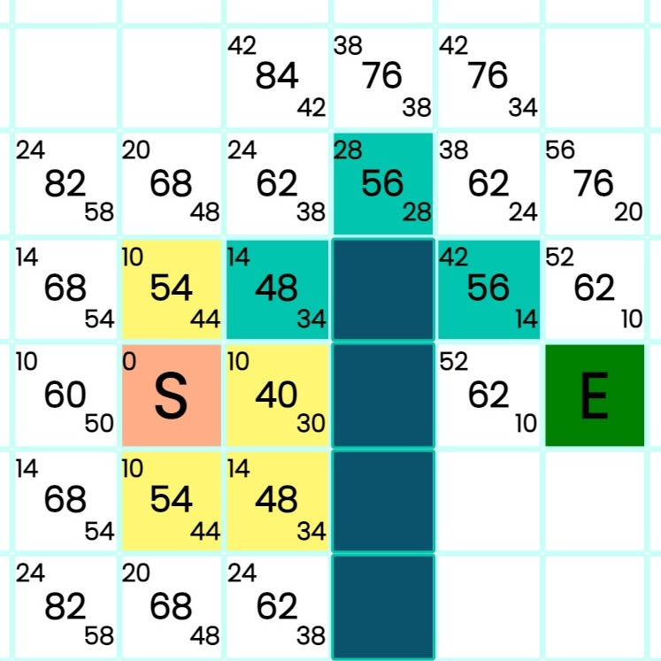
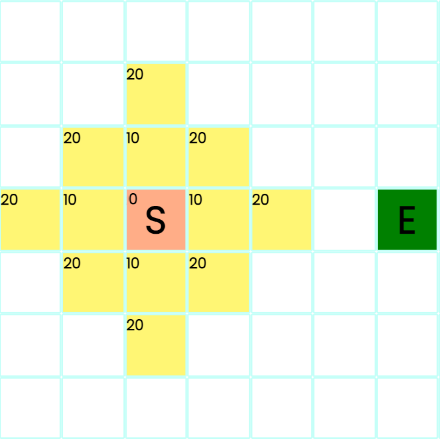
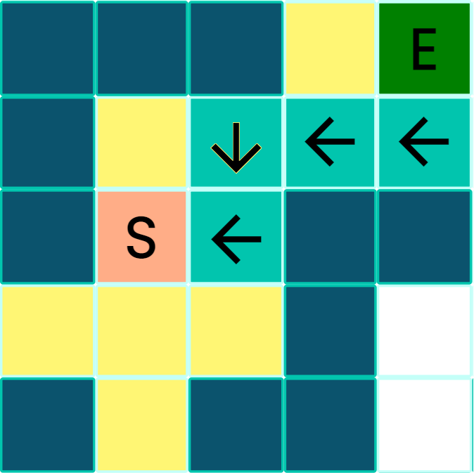

A* uses heuristics, it is weighted and it is roughly
aware where the
end node
actually is. It gurantees the
shortest path.
Basically, every node on the grid has an associated gCost, hCost and an fCost.
gCost : Stands for the distance from the start node. How much I will have to move
to get here.
hCost : Stands for the distance from the end node, however, the obstacles are yet
not considered.
fCost : Is sum of both these costs.
When the end node is reached, A* will have already found out the shortest path to each node leading there and
thus will be able to show the shortest path.
We can say that A* is focused more on the end node because it has some ideas where
it is.

Dijkstra's Algorithm
Dijkstra uses weights as well, on it's way Dijkstra will calculate the shortest way
possible to reach the
end node. Whenever it reaches the end node, it will turn back and see which path led it there in the most
efficient way. However, it is unbeknown to Dijkstra where the end node is in the
beginning, so it will just search in all four
directions all the way. It guarantees the shortest path.

Breadth-First Search (BFS)
BFS will check each closest neighboor node if they are the end node or not, as long
as they are not the endnode, it will make all the other nodes check their closest
neighboors do the same. It uses FIFO(first in first out) logic while checking the
nodes.
BFS will store which node checked for all their closest neighboors, so it won't
have to run those nodes again.It is unweighted and yet promises the shortest path.
A real life example could be as follows,
You are trying to meet this guy Axel, you ask your closest friends if they know
Axel. They say no but kindly
of
them, they ask their own closest friends if they know Axel who will ask their
friends. Until someone on the
line says 'Yes I know him!.' It goes on. When Axel asks who asked for him, everyone on the line will point
back to the person who asked for Axel until you are pointed at. You will then have the closest 'connection'
you have
to Axel. However,do not forget not to ask the same person twice if they know Axel. That would be,
'unnecessary'

Deep-First Search (DFS)
DFS is unweighted and does not guarantee the shortest path. It is really
unefficient for path
finding. Basic
logic is, DFS will move to whichever closest node discovered, regardless of if that node and the following
nodes will lead to a dead end.So we can say it is a LIFO(last in first out) logic.
Only when it is blindly obvious a dead end is
achieved, it will turn it's way
to the point where it
can discover the rest of the grid.
Even when the end node is achieved, DFS will still visit all the nodes until that
node again, even if
they literally make the path longer. Only leading-to-dead-end nodes will be deducted.
Real life example could be as follows;
You want to watch the new season of your favorite show, you really wonder how the season finale will play
out. But to be able to understand the storyline, you have to watch each episode starting from the first to the
season finale so you do it. Each episode, every minute of those episodes. In the season finale you realize
some episodes were really not
important for the plot but
you have seen them anyways already.